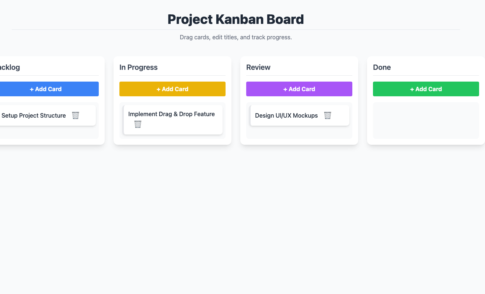
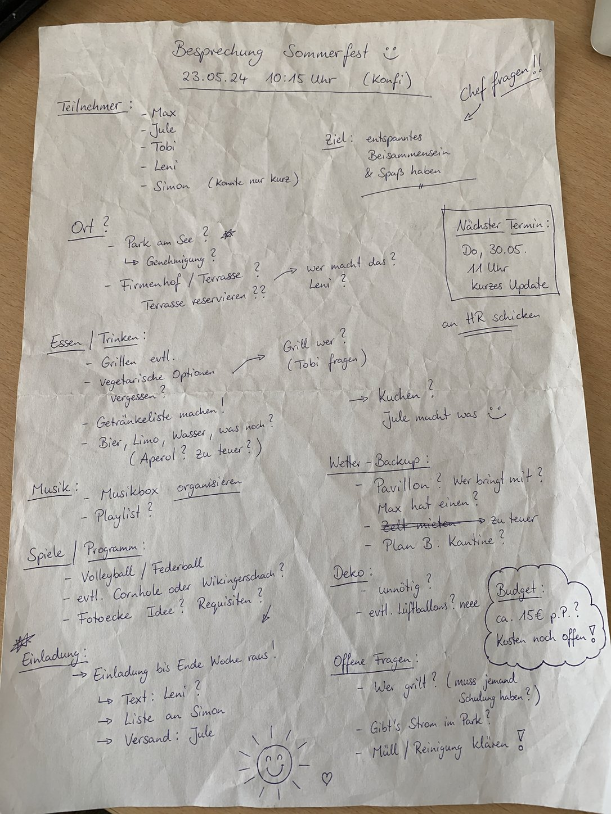
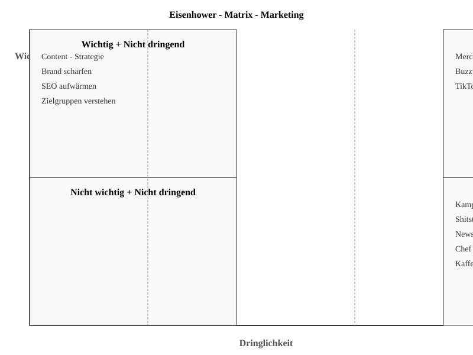
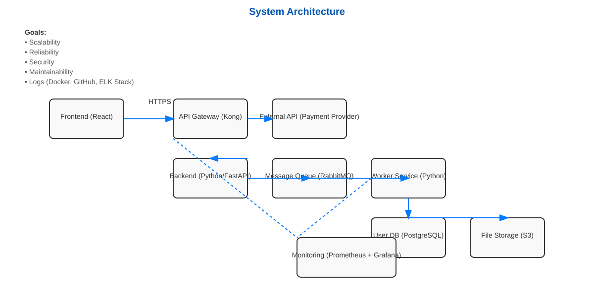
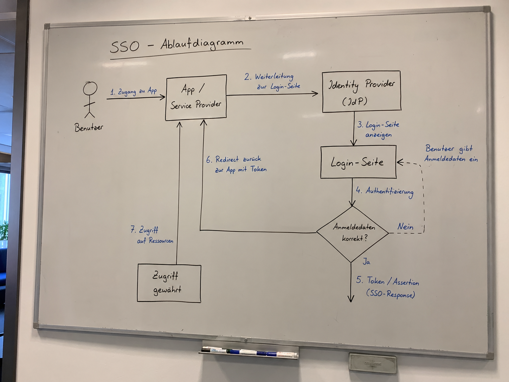
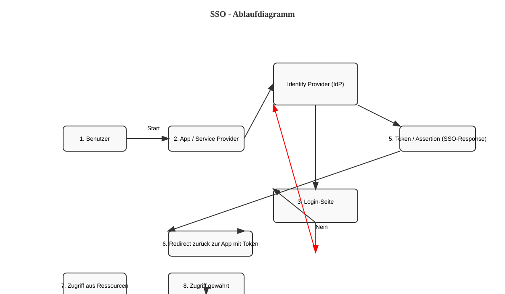

google/gemma-4-e2b@q8_0
google
4.6B
· dense
gguf / q8_0
ctx 128k
released 2026-03-02
vision
tool_use
Score
0.73
Statisch
0.92
Funktional
0.50
Qualitativ
0.78
Worum geht es? Was wird getestet?
Aufgabe: Aus einem ~200-Wörter-Prompt soll das Modell ein voll funktionales Kanban-Board als single-file HTML mit Drag & Drop, localStorage-Persistenz, Edit/Delete und Confetti-Animation generieren — in einem einzigen Chat ohne Iteration. Der Prompt enthält zusätzlich einen kleinen `data-testid`-Vertrag, damit ein Playwright-Test die App ferngesteuert bedienen kann.
Drei Signale fließen in den Score ein:
(1) Statisch — Linter prüft konkrete Constraints im HTML (Spalten, Tailwind, localStorage-Aufruf, kein Framework, kein window.alert/prompt, …).
(2) Funktional — Playwright fährt eine kleine CRUD-Sequenz: Karte anlegen, Karte löschen mit Bestätigung, Reload — bleibt der Zustand erhalten? — und prüft, ob während des gesamten Flows JS-Konsolen-Fehler auftreten. Drag & Drop und Confetti werden bewusst nicht funktional getestet (zu viele Implementierungsvarianten).
(3) Qualitativ — LLM-as-Judge bewertet Screenshot und Code (Visual + Codequalität + Konsistenz Render↔Code).
Score = Mittelwert über die vorhandenen Signale.
Warum Modelle scheitern: Reasoning-Modelle verbrauchen ihre Token im Denken statt im Schreiben. Sliding-Window-Modelle (Gemma 4) verlieren Constraints am Anfang des Prompts. Kleine Modelle (<3B) produzieren oft kein zusammenhängendes HTML — oder ignorieren den data-testid-Vertrag, was die funktionalen Tests reihenweise rot färbt.
Prompt
System-Prompt
You are a careful front-end engineer.
Developer-Prompt
Create a fully functional Kanban board in a single HTML file using vanilla JavaScript (no frameworks like react). Requirements: - Columns: Backlog, In Progress, Review, Done. - Cards must be: - draggable across columns, - editable in place, - persisted in localStorage (state survives reloads) - please use your own namespace, - deletable with a confirmation prompt. - Each column provides an "Add card" action. - Style with Tailwind via CDN. - Add subtle CSS transitions and trigger a confetti animation when a card moves to "Done". - Thoroughly comment the code. - dont use window.alert or window.prompt to add/edit/delete cards - if there are no cards yet, create some dummy cards - modern and vibrant design Stable test selectors (mandatory — these data-testid attributes are used by an automated functional test; do not omit, rename, or split them across multiple elements): - Column containers: data-testid="column-backlog", data-testid="column-in-progress", data-testid="column-review", data-testid="column-done". - Every "Add card" button (one per column): data-testid="add-card". - Every card element: data-testid="card". - Inside each card, the delete trigger: data-testid="delete-card". - The confirm button of the delete-confirmation dialog/modal: data-testid="confirm-delete". - The input/textarea where a new card title is typed: data-testid="card-input". Pressing Enter in this input MUST commit the new card. As answer return the plain HTML of the working application (script and styles included)
Screenshot der gerenderten App

Qualitativ · LLM-as-Judge (openai/gpt-5.4)
2026-04-28T23:05:11.260989+00:00
0.78
Visuell (Screenshot)
-
board renders0.90
-
column completeness1.00
-
cards present1.00
-
ui affordances0.70
-
design quality0.75
Das Board rendert klar mit allen vier Spalten, sichtbaren Karten und gut erkennbaren Add-Card-Buttons. Optisch ist es sauber und modern, aber links ist die Backlog-Spalte im Screenshot leicht abgeschnitten und echte Drag-/Edit-Affordances sind nur teilweise sichtbar.
Code-Qualität (HTML/JS)
-
code structure0.80
-
dom safety0.90
-
robustness0.55
-
code quality0.60
Der Code ist ordentlich in Funktionsblöcke für State, Render, CRUD, Drag-and-Drop und Init gegliedert; User-Titel werden sicher per textContent gesetzt. Schwächer sind Robustheit und Detailqualität: localStorage-Schreiben ist nicht abgesichert, der Delete-Modal-Fluss ist fehlerhaft, weil showDeleteModal keine data-card-id am Confirm-Button setzt, und es gibt etwas doppelte bzw. unnötig komplexe Edit-Logik.
Konsistenz Render ↔ Code
0.85
Screenshot und Code passen weitgehend zusammen: vier Spalten, drei Dummy-Karten und Add-Buttons werden wie im HTML/JS beschrieben angezeigt. Kleinere Abweichungen bleiben in den interaktiven Details, weil einige versprochene Funktionen im Code bei Nutzung brechen würden, obwohl der statische Render stimmig aussieht.
Statisch · Linter-Checks (11/12 bestanden)
-
✓
Spalte 'Backlog'
-
✓
Spalte 'In Progress'
-
✓
Spalte 'Review'
-
✓
Spalte 'Done'
-
✗
HTML5 Drag&Drop oder Sortable-Libkein draggable / dragstart / sortable.js gefunden
-
✓
localStorage-Persistenz
-
✓
Tailwind via CDN
-
✓
Confetti-Animation auf 'Done'
-
✓
Add-Card-Button
-
✓
Vanilla JS (kein React/Vue/Angular/Svelte)
-
✓
Keine window.alert/prompt für CRUD
-
✓
Editierbare Karten (contenteditable / input)
Funktional · E2E-Tests (3/6 bestanden)
-
✓
Seite lädt mit allen 4 Spalten
-
✗
Karte hinzufügen via ButtonPage.wait_for_selector: Timeout 2000ms exceeded. Call log: - waiting for locator("[data-testid=\"card-input\"]") to be visible
-
✗
Karte wird genau 1× angelegt (kein Doppel-Submit)übersprungen — Add-Flow ist gescheitert
-
✗
Karte löschen via Button + BestätigungPage.wait_for_selector: Timeout 2000ms exceeded. Call log: - waiting for locator("[data-testid=\"confirm-delete\"]") to be visible
-
✓
Karten überleben einen Reload
-
✓
Keine JS-Konsolen-Fehler
Roh-Antwort des Modells
```html
<!DOCTYPE html>
<html lang="en">
<head>
<meta charset="UTF-8">
<meta name="viewport" content="width=device-width, initial-scale=1.0">
<title>Vanilla JS Kanban Board</title>
<!-- Tailwind CSS CDN -->
<script src="https://cdn.tailwindcss.com"></script>
<style>
/* Custom styles for drag and drop feedback */
.dragging {
opacity: 0.5;
border: 2px dashed #3b82f6; /* Blue border when dragging */
}
.drag-over {
background-color: rgba(59, 130, 246, 0.1); /* Light blue background when hovering over a drop zone */
border: 2px dashed #3b82f6;
}
/* Style for the in-place editing state */
.editing {
border: 1px solid #ef4444; /* Red border when editing */
background-color: #fffbeb; /* Light yellow background */
}
/* Custom scrollbar for aesthetics */
::-webkit-scrollbar {
width: 8px;
}
::-webkit-scrollbar-thumb {
background: #9ca3af;
border-radius: 4px;
}
</style>
</head>
<body class="bg-gray-50 min-h-screen p-8 font-sans">
<!-- Confetti Container (Hidden by default) -->
<div id="confetti-container" class="fixed inset-0 pointer-events-none z-50"></div>
<header class="text-center mb-10">
<h1 class="text-4xl font-extrabold text-gray-800 border-b pb-2">Project Kanban Board</h1>
<p class="text-gray-500 mt-2">Drag cards, edit titles, and track progress.</p>
</header>
<!-- Kanban Board Container -->
<main class="flex gap-6 justify-center">
<!-- Column: Backlog -->
<div id="column-backlog" data-testid="column-backlog" class="w-80 bg-white p-4 rounded-xl shadow-lg transition duration-300 hover:shadow-xl flex-shrink-0">
<h2 class="text-xl font-semibold mb-4 text-gray-700 border-b pb-2">Backlog</h2>
<!-- Add Card Button -->
<button data-testid="add-
Score
0.63
Worum geht es? Was wird getestet?
Aufgabe: Vier Sub-Tasks, je 1 Bild. (1) handgeschriebene Meeting-Notiz leicht/mittel/schwer lesbar — Modell soll Text transkribieren. (2) Buchseite in Frakturschrift — gleiche Aufgabe.
Was getestet wird: OCR-Qualität, Erkennen von Layout-Strukturen (Spalten, Bullet-Punkte, Datumsangaben), Umgang mit unleserlicher Schrift.
Warum Modelle scheitern: Reine Text-Modelle haben keine Vision-Fähigkeit (werden gefiltert). Schwache VLMs erkennen nur den deutlichsten Teil. Manche bricht der Output ab oder geht ins Reasoning ohne sichtbare Antwort.
Prompt
System-Prompt
Du bist OCR-Spezialist für deutsche Handschrift.
Developer-Prompt
Auf dem Bild siehst du eine handschriftliche Meeting-Notiz mit klarer Struktur und gut lesbarer Schrift. Transkribiere den gesamten lesbaren Text. Behalte die Anordnung bei (Überschrift, Spalten, To-Dos). Bei unleserlichen Stellen schreibe '[unleserlich]'. Gib ausschließlich den puren OCR-Text im Markdown-Format zurück — keine Vorbemerkung, keine Erklärungen, kein Code-Fence.
Handschrift OCR – leicht
7.2 s · 111 t/s
Recall
70%
Precision
92%
54/77
+5
10 verschoben · 1 ähnlich
0.79

Modell-Antwort
Meetingnotizen Website - Relauch 12.06.25, 09:30 Uhr Anwesend: Anna, Ben, Mira, Jonas, Ece Themen: - Startseite - Texte - Bildauswahl - Launch - Termin - offene Fragen To-Dos: - Ben -> Bilder anfragen - Mira -> Startseite anpassen - Jonas -> Feedback Kunde - Anna -> SEO - Check Stand: - Design fast final ✓ - Texte für Über-uns fehlen noch - Mobile Ansicht prüfen Offen: - CMS langsam? Nächstes Meeting: 17.06., 10 Uhr
Word-Diff Ground-Truth ↔ Modell
● matched ·
● verschoben ·
● ähnlich ·
● fehlt im Modell ·
● extra/falsch
meetingnotizen website
relaunch ≈ relauch
12 06 25 09 30 uhr anwesend anna ben mira jonas ece
cms
langsam
themen startseite texte bildauswahl launch termin offene fragen
stand design fast final texte
für über uns
fehlen
noch bilder vom team noch nicht komplett
mobile ansicht prüfen
bitte kurz halten
to dos ben bilder anfragen mira startseite anpassen jonas feedback kunde anna seo check
für über uns noch
offen
rechtstexte final freigabe kunde bis freitag wer testet kontaktformular
cms
nächstes meeting 17 06 10 uhr
Ground Truth (zum Vergleich)
Meetingnotizen Website-Relaunch 12.06.25, 09:30 Uhr Anwesend: Anna, Ben, Mira, Jonas, Ece CMS langsam? Themen: Startseite Texte Bildauswahl Launch-Termin offene Fragen Stand: Design fast final Texte für Über-uns fehlen noch Bilder vom Team noch nicht komplett Mobile Ansicht prüfen bitte kurz halten To-Dos: Ben Bilder anfragen Mira Startseite anpassen Jonas Feedback Kunde Anna SEO-Check Offen: Rechtstexte final? Freigabe Kunde bis Freitag Wer testet Kontaktformular? Nächstes Meeting: 17.06., 10 Uhr
Handschrift OCR – mittel
9.0 s · 111 t/s
Recall
69%
Precision
91%
94/136
+9
5 verschoben · 2 ähnlich
0.79

Modell-Antwort
meeting protokoll 21.05. 10 Uhr 28.05. Teilnehmer: M. Schulte, T. Wagner, L. Becker, S. Klein (später), H. Jo. Themen: Projektstatus / Budget / Timeline / Meilensteine / ... Projektstatus: - Modul A fertig (Team S.) - Modul B verzögert sich - Testphase startet nächste Woche (hoffentlich) - Kundenfeedback stellt noch aus Budget: - 20 % über Plan - Ursache: unklare Anforderungen - nächster Mal genauer kalkulieren !! Offene Punkte: - Freigabe von Kunde fehlt noch - Schrittweise im System X unter... noch geplant - Schulung für neues Tool ? To-Dos: - T.W.: Budget - Report 28.05. - L.B.: Kunden anstupsen wg. Feedback - Etat: Dokumentation aktualisieren Rückfragen: - Wie gehen wir mit dem Risiko um ? - Priorisierung der Features nochmal prüfen
Word-Diff Ground-Truth ↔ Modell
● matched ·
● verschoben ·
● ähnlich ·
● fehlt im Modell ·
● extra/falsch
meetingprotokoll
protokoll
21 05
25 11
uhr teilnehmer m
schulz
schulte
t wagner l becker s klein später h
jt
jo
themen projektstatus
update
budget
ist zu hoch
timeline
meilenstein ≈ meilensteine
risiken
projektstatus modul a fertig team s modul b verzögert sich testphase startet nächste woche hoffentlich kundenfeedback
steht
stellt
noch aus
details in jira
budget 20 über plan ursache unklare anforderungen
nachbessern nötig
nächstes ≈ nächster
mal genauer kalkulieren
bitte report bis
28 05
offene punkte freigabe von kunde fehlt noch
t w kümmert sich schnittstelle zu
schrittweise im
system x
unklar rücksprache mit it
unter noch
schulung für neues tool
noch nicht
geplant
wer macht das
to dos t w budget report 28 05 l b kunden anstupsen wg feedback
etat
dokumentation aktualisieren
nächstes
meeting
04 06 25
10
uhr raum 2 15
rückfragen wie gehen wir mit dem risiko um priorisierung der features nochmal prüfen
Ground Truth (zum Vergleich)
Meetingprotokoll 21.05.25 11 Uhr Teilnehmer: M. Schulz, T. Wagner, L. Becker, S. Klein (später), H. Jt. Themen: Projektstatus / Update Budget — ist zu hoch Timeline / Meilenstein! Risiken Projektstatus: Modul A fertig (Team S.) Modul B verzögert sich Testphase startet nächste Woche (hoffentlich) Kundenfeedback steht noch aus Details in Jira Budget: 20% über Plan Ursache: unklare Anforderungen Nachbessern nötig nächstes Mal genauer kalkulieren bitte Report bis 28.05. Offene Punkte: Freigabe von Kunde fehlt noch (T.W. kümmert sich) Schnittstelle zu System X unklar — Rücksprache mit IT Schulung für neues Tool? noch nicht geplant — wer macht das? To-Dos: T.W.: Budget-Report — 28.05. L.B.: Kunden anstupsen wg. Feedback Dokumentation aktualisieren Nächstes Meeting: 04.06.25, 10 Uhr (Raum 2.15?) Rückfragen: Wie gehen wir mit dem Risiko um? Priorisierung der Features nochmal prüfen ...
Handschrift OCR – schwer
11.7 s · 111 t/s
Recall
56%
Precision
86%
83/148
+14
5 verschoben · 1 ähnlich
0.68

Modell-Antwort
Besprechung Sommerfest 23.05.24 10:15 Uhr (Kauf) Teilnehmer: - Max - Tobi - Leni - Simon (konte nur kurz) Essen / Trinken: - Grillen etc. - Bier, Wasser, was noch (Apéro?) zu teuer?) Deko: - Pavillon - Wer bringt mit? Max hat einen ? - Zeit mieten ? Chef fragen! Budget: ca. 15€ p.p.? (kosten noch offen) Spiele / Programm - Volleyball / Federball - evtl. Cornhole oder Wikingerschach? - Fotoecke Idee? Requisiten? Einladung: -> Einladung bis Ende Woche raus. -> Text: Leni ? -> Liste an Simon -> Versand: Jule Offene Fragen: - Wie geht? (musst jemand schulung haben?) - Gibt's Strom im Park? - Müll / Reinigung klären Wetter / Backup: - Pavillon ? - Wer bringt mit ? Max hat einen ?
Word-Diff Ground-Truth ↔ Modell
● matched ·
● verschoben ·
● ähnlich ·
● fehlt im Modell ·
● extra/falsch
besprechung sommerfest 23 05 24 10 15 uhr
konfi
chef fragen
kauf
teilnehmer max
jule
tobi leni simon
konnte ≈ konte
nur kurz
ziel entspanntes beisammensein spaß haben nächster termin do 30 05 11 uhr kurzes update an hr schicken ort park am see genehmigung firmenhof terrasse terrasse reservieren wer macht das leni
essen trinken grillen
evtl vegetarische optionen vergessen getränkeliste machen
etc
bier
limo
wasser was noch
aperol
apéro
zu teuer
grill wer tobi fragen kuchen jule macht was
wetter backup
pavillon wer bringt mit max hat einen
zelt
zeit
mieten
zu teuer plan b kantine musik musikbox organisieren playlist
deko
unnötig evtl luftballons neee
budget ca 15 p p kosten noch offen spiele programm volleyball federball evtl cornhole oder wikingerschach fotoecke idee requisiten einladung einladung bis ende woche raus text leni liste an simon versand jule offene fragen
wer grillt muss
wie geht musst
jemand schulung haben gibt s strom im park müll reinigung klären
pavillon wer bringt mit max hat einen
Ground Truth (zum Vergleich)
Besprechung Sommerfest 23.05.24 10:15 Uhr (Konfi) Chef fragen!! Teilnehmer: Max Jule Tobi Leni Simon (konnte nur kurz) Ziel: entspanntes Beisammensein & Spaß haben Nächster Termin: Do, 30.05. 11 Uhr kurzes Update an HR schicken Ort?: Park am See? Genehmigung? Firmenhof / Terrasse? Terrasse reservieren?? — wer macht das? Leni? Essen / Trinken: Grillen evtl. vegetarische Optionen vergessen? Getränkeliste machen! Bier, Limo, Wasser, was noch? (Aperol? zu teuer?) Grill wer? (Tobi fragen) Kuchen? Jule macht was Wetter / Backup: Pavillon? Wer bringt mit? Max hat einen? Zelt mieten → zu teuer Plan B: Kantine? Musik: Musikbox organisieren Playlist? Deko: unnötig? evtl. Luftballons? neee Budget: ca. 15€ p.P.? Kosten noch offen! Spiele / Programm: Volleyball / Federball evtl. Cornhole oder Wikingerschach? Fotoecke Idee? Requisiten? Einladung: Einladung bis Ende Woche raus! Text: Leni? Liste an Simon Versand: Jule Offene Fragen: Wer grillt? (muss jemand Schulung haben?) Gibt's Strom im Park? Müll / Reinigung klären
Fraktur OCR
6.2 s · 112 t/s
Recall
16%
Precision
85%
63/382
+11
1 ähnlich
0.28

Modell-Antwort
deiner Großmutter wohl nur geträumt haben. „Rein,“ meinte Malineken harinädig, sie hat ja auch die Prinzessin vom See gesehen, und das ist etwas ganz Besonderes.“ Davon habe ich noch nie gehört, „antwortete Gottlieb, so kann sie es dir erzählen, frag sie nur aus, sie weiß alles.“ – 14 – der Kahn war mitwielwe der Insel ganz nahe ge- kommen; die Kinder an einen das gegelten Stelle und befestigten ihn an einen aus dem Walder ragenden Floss.
Word-Diff Ground-Truth ↔ Modell
● matched ·
● verschoben ·
● ähnlich ·
● fehlt im Modell ·
● extra/falsch
deiner großmutter wohl nur geträumt haben
nein
rein
meinte malineken
hartnäckig
harinädig
sie hat ja auch die prinzessin vom see gesehen und das ist etwas ganz besonderes davon habe ich noch nie gehört antwortete gottlieb so kann sie es dir erzählen frag sie nur aus sie weiß alles
14
der kahn war
mittlerweile
mitwielwe
der insel ganz nahe
gekommen ≈ kommen
ge
die kinder
landeten
an
einer dazu geeigneten
einen das gegelten
stelle und befestigten ihn an
einem
einen
aus dem
wasser
walder
ragenden
pflock sie erstiegen die kleine anhöhe auf der sich das gehöft befand in dem kurzen feinen grase welches den boden bedeckte blühte der thymian ein festgetretener weg führte gerade auf die schilfhütte zu die lag heimlich unter den weiden das mächtige geäst der majestätischen bäume mit silbergrauem spitzblättrigem laube beladen breitete sich weit und wuchtig über das niedere dach welches sich der erde zuneigte dahinter erblickte man ein stück garten und ackerland von rohr und schilf wie mit einem wall umschlossen eine alte frau saß vor der thür des hüttchens und spann ihr haar war so weiß wie das gewebe der spinnen welches im herbst über die stoppeln fliegt um ihren rocken hatte sie ein schwarzes band gebunden gottlieb und malineken kamen mit dem korbe und blieben vor ihr stehen großmutter sagte letztere er will nicht glauben daß du die seejungfern gesehen hast und er weiß nichts von der prinzessin vom see sie netzte ihren faden geht ihr man eures weges gab sie ihnen zur antwort großmutter du könntest ihm die geschichte von der prinzessin vom see wohl erzählen bat malineken sie läßt sich schön anhören und man muß sie doch wissen wenn man über den see fährt und in dem blumental tag für tag herumwandert ich meine ihr könntet euer vesper brauchen sagte die großmutter es hat eben vier uhr geschlagen ach ja rief malineken inbrünstig erdbeeren mit milch und ein stück brot dazu und dieweil wir das aufzehren erzählt ihr dem gottlieb die geschichte sie ließ nicht nach sie mußte ihren willen haben ein weilchen danach saßen die kinder auf einem baumstamm vor der hütte und hatten zwischen sich einen napf mit süßer milch in der schwammen die erdbeeren so dick daß man nicht wußte war das milch mit erdbeeren oder erdbeeren mit milch doch es mochte wohl auf eins herauskommen die großmutter blickte zuweilen nach ihnen hin
floss
Ground Truth (zum Vergleich)
deiner Großmutter wohl nur geträumt haben. „Nein," meinte Malineken hartnäckig, „sie hat ja auch die Prinzessin vom See gesehen, und das ist etwas ganz Besonderes." „Davon habe ich noch nie gehört," antwortete Gottlieb. „So kann sie es dir erzählen, frag sie nur aus, sie weiß alles." Der Kahn war mittlerweile der Insel ganz nahe gekommen; die Kinder landeten an einer dazu geeigneten Stelle und befestigten ihn an einem aus dem Wasser ragenden Pflock. Sie erstiegen die kleine Anhöhe, auf der sich das Gehöft befand. In dem kurzen, feinen Grase, welches den Boden bedeckte, blühte der Thymian; ein festgetretener Weg führte gerade auf die Schilfhütte zu, die lag heimlich unter den Weiden. Das mächtige Geäst der majestätischen Bäume, mit silbergrauem, spitzblättrigem Laube beladen, breitete sich weit und wuchtig über das niedere Dach, welches sich der Erde zuneigte. Dahinter erblickte man ein Stück Garten und Ackerland, von Rohr und Schilf wie mit einem Wall umschlossen. Eine alte Frau saß vor der Thür des Hüttchens und spann. Ihr Haar war so weiß wie das Gewebe der Spinnen, welches im Herbst über die Stoppeln fliegt, um ihren Rocken hatte sie ein schwarzes Band gebunden. Gottlieb und Malineken kamen mit dem Korbe und blieben vor ihr stehen. „Großmutter," sagte letztere, „er will nicht glauben, daß du die Seejungfern gesehen hast, und er weiß nichts von der Prinzessin vom See." Sie netzte ihren Faden. „Geht ihr man eures Weges," gab sie ihnen zur Antwort. „Großmutter, du könntest ihm die Geschichte von der Prinzessin vom See wohl erzählen," bat Malineken, „sie läßt sich schön anhören, und man muß sie doch wissen, wenn man über den See fährt und in dem Blumental Tag für Tag herumwandert." „Ich meine, ihr könntet euer Vesper brauchen," sagte die Großmutter, „es hat eben vier Uhr geschlagen." „Ach ja," rief Malineken inbrünstig, „Erdbeeren mit Milch und ein Stück Brot dazu; und dieweil wir das aufzehren, erzählt Ihr dem Gottlieb die Geschichte." Sie ließ nicht nach, sie mußte ihren Willen haben. Ein Weilchen danach saßen die Kinder auf einem Baumstamm vor der Hütte und hatten zwischen sich einen Napf mit süßer Milch, in der schwammen die Erdbeeren so dick, daß man nicht wußte, war das Milch mit Erdbeeren, oder Erdbeeren mit Milch; doch es mochte wohl auf eins herauskommen. Die Großmutter blickte zuweilen nach ihnen hin
Score
—
Worum geht es? Was wird getestet?
Aufgabe: In einem deutschen Buch-Korpus (mit eingestreutem Quellcode) werden 10 künstliche Fakten an gleichmäßig verteilten Tiefen (5% – 95%) versteckt. Das Modell muss alle wiederfinden.
Ablauf — DREI Turns im selben Chat-Kontext (Prefill nur einmal):
Turn 1 — Korpus-Zusammenfassung: Modell bekommt den langen Korpus und soll ihn in 3-5 Sätzen zusammenfassen. Erzwingt eine echte Verarbeitung des Textes.
Turn 2 — Needle-Retrieval: gleiche Konversation, jetzt die Bedürfnisfragen für die 10 versteckten Fakten.
Turn 3 — Verstehen + Halluzinations-Fallen: 4 Faktenfragen zum Buchinhalt + 3 Halluzinations-Fallen (Modell soll erkennen, dass die Frage im Text NICHT beantwortet wird).
Default-Modus läuft EINE einheitliche Stufe für alle Modelle: 120k Tokens. Modelle ohne ausreichendes max_context werden in dieser Stufe nicht ausgeführt. `niah_deep` läuft zusätzlich 32k / 64k / 200k für eine vollständige Heatmap.
Score-Gewichtung: Zusammenfassung 20% + Needle-Retrieval 50% + Verstehen/Halluzinations-Resistenz 30%.
Warum Modelle scheitern: Sliding-Window-Attention (Gemma 4) sieht nur die letzten 1-2k Tokens scharf. Reasoning-Modelle laufen auf Token-Limit, bevor sie antworten. Q4-KV-Cache verfälscht Recall messbar bei langen Kontexten. Bei den Halluzinations-Fallen verleitet der Helpful-Bias zu plausibel klingenden Erfindungen.
Prompt
Developer-Prompt
TURN 1 (User): Im folgenden Abschnitt befindet sich ein längerer Mischtext aus deutschsprachiger Erzählung und Quellcode. ===== TEXT BEGINN ===== <korpus mit eingestreuten needles, je nach stage 32k–128k tokens> ===== TEXT ENDE ===== Fasse den Inhalt des Textes in 3-5 Sätzen zusammen. Nenne Hauptfiguren, Schauplatz und die wichtigsten Themen. TURN 2 (User, im selben Chat-Kontext): Beantworte jetzt die folgenden Fragen ausschließlich anhand des oben gezeigten Textes — erfinde nichts, ergänze nichts und übernehme keine Allgemeinwissen-Annahmen. Fragen: 1. <frage zu needle 1> 2. <frage zu needle 2> ... Antworte als nummerierte Liste 1., 2., 3. mit jeweils einem kurzen Satz.
Pro Kontextlänge wurden 10 Needles über den Korpus verteilt. Der NIAH-Score kombiniert Korpus-Zusammenfassung, Needle-Retrieval und optional Verstehen + Halluzinations-Fallen. LLM-Judges ersetzen die heuristischen Scores für Summary und Verstehen, sobald vorhanden.
Stufe: 120k Tokens
Sub-Benchmark · Needle-Retrieval
Turn 2
0/10
hits
-
○
5% (5 %)erwartet: blauer Ankerstein, Lübeck-1907, A-318
-
○
10% (10 %)erwartet: smaragdgrün, Schlüssel, Seriennummer, 7-Bravo-12
-
○
15% (15 %)erwartet: Nordstern-Brigade, violetter
-
○
25% (25 %)erwartet: Indigo-Quark
-
○
33% (33 %)erwartet: Atlantis-Mira, NL-7711, 142
-
○
50% (50 %)erwartet: Ehrenmitglied, Aluminium-Gesellschaft, Köln
-
○
65% (65 %)erwartet: Safran-Klops Margarethe, 7 Gramm|7 g, 3 Stunden|drei Stunden
-
○
75% (75 %)erwartet: Erbe von Onkel Walpurgis, 42-Lima
-
○
85% (85 %)erwartet: 7f4a2e91-marlin-2026
-
○
90% (90 %)erwartet: Coriolis-Effekt, Pendel, Memo, Dr. Kühn, 17.03.2024
Modell-Antwort auf die Needle-Fragen
Fehler: summary turn: Client error '400 Bad Request' for url 'http://127.0.0.1:1234/api/v0/chat/completions'
For more information check: https://developer.mozilla.org/en-US/docs/Web/HTTP/Status/400
Sub-Benchmark · Verstehen + Halluzinations-Fallen
Turn 3
0.00
Fakten 0/4 ·
Fallen 0/2
-
FaktenfrageWie heißt der Schmied vom Blumental, bei dem Gottlieb in der Lehre ist? (Vor- und Nachname)
-
FaktenfrageWie heißt der französische Kapitän, der Gottliebs Eltern getötet hat?
-
FaktenfrageWomit lenkte Malineken die Wachen ab, um den Schlüssel zu entwenden?
-
FaktenfrageWarum muss Gottlieb sich verborgen halten? Was würden die Franzosen sonst tun?
-
Halluzinations-FalleWie heißt Gottliebs Onkel?
-
Halluzinations-FalleMit welcher List überlistete Michael Lebbin Kaiser Bonaparte persönlich?
Artefakte:
Breakdown pro Kontextlänge
Haystack 120k Tokens
tool_use
alle Modelle in diesem Bench →Score
1.00
Worum geht es? Was wird getestet?
Aufgabe: 3 Szenarien (leicht/mittel/schwer) mit gemockten Tools (read_file, apply_diff, get_weather, list_files). Modell muss die richtigen Tools in der richtigen Reihenfolge aufrufen und abschließend antworten. Multi-Turn (Tool-Result kommt zurück, Modell kann weitere Tools aufrufen).
Was getestet wird: OpenAI-style function calling, Argument-Korrektheit, Reihenfolge bei Multi-Step-Aufgaben (Datei lesen → JSON parsen → Wetter abfragen).
Warum Modelle scheitern: Modelle ohne 'tool_use'-Capability ignorieren Tool-Schemas. Schwache Modelle wählen falsche Tools oder fehlerhafte Argumente. Hard-Tier (JSON-Format-Output) bricht oft bei der Gesamt-Synthese.
Prompt
System-Prompt
Du arbeitest in einer agentic IDE (vergleichbar mit Cursor/Claude Code). Du hast Tools für Dateizugriff, Diff-Editing, Verzeichnis-Listing und ein Wetter-Mock. Plane mehrstufig: erst aufklären, dann handeln, am Ende prüfen. Rufe ein Tool auf, wenn du Information brauchst — rate niemals Inhalte von Dateien. Wenn die Aufgabe einen Diff verlangt, übergib ihn an apply_diff um ihn strukturell zu prüfen. Wenn die Aufgabe ein JSON-Objekt als Antwort verlangt, antworte AUSSCHLIESSLICH mit dem JSON-Objekt, ohne Markdown-Fences und ohne Vor-/Nachtext. Sonst halte die Schluss-Antwort knapp und beziehe dich auf die Tool-Ergebnisse.
easy_extract_todos
leicht
1.00
· 3/3 Checks
In notes.md stehen Sprint-Notizen. Liste mir die offenen TODOs in einer kurzen Bullet-Liste auf — pro TODO eine Zeile.
Tool-Aufrufe
-
1. read_file
({"path": "notes.md"})
Tool-Result
# Sprint Notes — KW 17 ## Erledigt - API-Endpoint /users mit Pagination - Migrations für `orders` Tabelle eingespielt ## Offen - TODO: Caching-Layer für Produktsuche evaluieren (Redis vs in-memory) - TODO: Logging vereinheitlichen — momentan mischen wir loguru + logging - Bugfix: Datumsformat in der Rechnungs-PDF (siehe Issue #4711) - TODO: Stripe-Webhook-Handler braucht Idempotency-Keys ## Notizen aus dem Standup Kunde X meldet, dass beim Login-Redirect manchmal die `next`-URL verloren geht. Reproduzierbar nur in Safari iOS. Verdacht auf Service-Worker-Cache. TODO: Safari-Repro-Setup auf
-
✓
Tool 'read_file' aufgerufenhistory: read_file
-
✓
Argumente für 'read_file'path='notes.md'
-
✓
Antwort erwähnt 3/4 der Schlüssel-Begriffeerwähnt: ['Caching', 'Logging', 'Stripe', 'Safari'], fehlt: []
Endgültige Antwort
Hier sind die offenen TODOs aus `notes.md`: * TODO: Caching-Layer für Produktsuche evaluieren (Redis vs in-memory) * TODO: Logging vereinheitlichen — momentan mischen wir loguru + logging * TODO: Stripe-Webhook-Handler braucht Idempotency-Keys * TODO: Safari-Repro-Setup auf TestFlight provisionieren.
easy_list_then_read
leicht
1.00
· 4/4 Checks
Ich weiß nicht mehr, welche Datei in diesem Projekt die Konfiguration enthält. Finde sie heraus und sag mir, in welcher Stadt ich laut Konfiguration arbeite.
Tool-Aufrufe
-
1. list_files
({})
Tool-Result
["config.json", "fizzbuzz.py", "inventory.py", "notes.md", "users.json"]
-
2. read_file
({"path": "config.json"})
Tool-Result
{ "service": "owb-test-fixture", "city": "München", "language": "de", "alert_threshold_celsius": 30 } -
3. get_weather
({"city": "M\u00fcnchen"})
Tool-Result
{"city": "M\u00fcnchen", "temp_c": 9, "condition": "bew\u00f6lkt", "wind_kmh": 7}
-
✓
Tool 'list_files' aufgerufenhistory: list_files, read_file, get_weather
-
✓
Tool 'read_file' aufgerufenhistory: list_files, read_file, get_weather
-
✓
Argumente für 'read_file'path='config.json'
-
✓
Antwort erwähnt 1/1 der Schlüssel-Begriffeerwähnt: ['München'], fehlt: []
Endgültige Antwort
Laut der Konfiguration arbeitest du in München.
medium_fizzbuzz_fix
mittel
1.00
· 6/6 Checks
fizzbuzz.py hat einen Bug — die Funktion liefert die Werte 1..n-1 statt 1..n. Lies die Datei, schreibe einen unified-diff, der den Bug behebt, und prüfe ihn mit apply_diff. Antworte am Ende mit einer kurzen Erklärung des Fixes.
Tool-Aufrufe
-
1. list_files
({})
Tool-Result
["config.json", "fizzbuzz.py", "inventory.py", "notes.md", "users.json"]
-
2. read_file
({"path": "fizzbuzz.py"})
Tool-Result
"""Simple FizzBuzz with a deliberate off-by-one bug.""" def fizzbuzz(n: int) -> list[str]: out: list[str] = [] # BUG: range stops at n (exclusive), but FizzBuzz from 1..=n needs n+1. for i in range(1, n): if i % 15 == 0: out.append("FizzBuzz") elif i % 3 == 0: out.append("Fizz") elif i % 5 == 0: out.append("Buzz") else: out.append(str(i)) return out if __name__ == "__main__": print(fizzbuzz(15)) -
3. apply_diff
({"diff": "--- fizzbuzz.py\n+++ fizzbuzz.py\n@@ -4,7 +4,7 @@\n def fizzbuzz(n: int) -\u003e list[str]:\n out: list[str] = []\n # BUG: range stops at n (exclusive), but FizzBuzz from 1..=n needs n+1.\n- for i in range(1, n):\n+ for i in range(1, n + 1):\n if i % 15 == 0:\n out.append(\"FizzBuzz\")\n elif i % 3 == 0:", "path": "fizzbuzz.py"})
Tool-Result
{"ok": true, "applied": 2, "added_lines": 1, "removed_lines": 1, "note": "structural-validation only; no real write performed"}
-
✓
Tool 'read_file' aufgerufenhistory: list_files, read_file, apply_diff
-
✓
Tool 'apply_diff' aufgerufenhistory: list_files, read_file, apply_diff
-
✓
Argumente für 'read_file'path='fizzbuzz.py'
-
✓
Argumente für 'apply_diff'path='fizzbuzz.py'
-
✓
Diff für fizzbuzz.py validiert strukturellapplied=2, calls=1
-
✓
Diff ändert ≥2 Zeilenangewendet: 2
Endgültige Antwort
Der Bug wurde behoben, indem die Schleife in `fizzbuzz.py` von `range(1, n)` zu `range(1, n + 1)` geändert wurde. Dies stellt sicher, dass die Funktion die Zahlen von 1 bis einschließlich $n$ verarbeitet, wie es für FizzBuzz üblich ist.
medium_filter_users
mittel
1.00
· 6/6 Checks
users.json enthält eine Liste aller Nutzer. Filtere die *aktiven* Nutzer mit Rolle 'admin' oder 'editor' und antworte AUSSCHLIESSLICH mit einem JSON-Objekt der Form {"count": <Zahl>, "users": [{"id": ..., "name": ..., "role": ...}, ...]}. Keine Markdown-Fences, kein Vor- oder Nachtext.
Tool-Aufrufe
-
1. read_file
({"path": "users.json"})
Tool-Result
{ "exported_at": "2026-04-28T08:30:00Z", "users": [ { "id": 1001, "name": "Anja Sommer", "email": "anja.sommer@example.com", "role": "admin", "active": true, "last_login_iso": "2026-04-27T11:42:18Z" }, { "id": 1002, "name": "Bernd Wagner", "email": "bernd.wagner@example.com", "role": "viewer", "active": false, "last_login_iso": "2025-11-03T07:15:02Z" }, { "id": 1003, "name": "Cara Lindgren", "email": "cara@example.com", "role": "editor", "active": true, "last_logi
-
✓
Tool 'read_file' aufgerufenhistory: read_file
-
✓
Argumente für 'read_file'path='users.json'
-
✓
Antwort enthält gültiges JSON
-
✓
JSON enthält Felder ['count', 'users']alle Felder vorhanden
-
✓
count == 4actual=4
-
✓
users.ids == [1001, 1003, 1004, 1006]actual=[1001, 1003, 1004, 1006]
Endgültige Antwort
{"count": 4, "users": [{"id": 1001, "name": "Anja Sommer", "role": "admin"}, {"id": 1003, "name": "Cara Lindgren", "role": "editor"}, {"id": 1004, "name": "Dennis Pohl", "role": "editor"}, {"id": 1006, "name": "Frederik Otto", "role": "admin"}]}
medium_weather_alert
mittel
1.00
· 7/7 Checks
Lies config.json und hol das Wetter für die dort eingetragene Stadt. Antworte AUSSCHLIESSLICH mit einem JSON-Objekt {"city": ..., "temp_c": ..., "condition": ..., "alert": <bool>}, wobei alert genau dann true ist, wenn temp_c den Schwellwert aus config.json überschreitet.
Tool-Aufrufe
-
1. read_file
({"path": "config.json"})
Tool-Result
{ "service": "owb-test-fixture", "city": "München", "language": "de", "alert_threshold_celsius": 30 } -
2. get_weather
({"city": "M\u00fcnchen"})
Tool-Result
{"city": "M\u00fcnchen", "temp_c": 9, "condition": "bew\u00f6lkt", "wind_kmh": 7}
-
✓
Tool 'read_file' aufgerufenhistory: read_file, get_weather
-
✓
Tool 'get_weather' aufgerufenhistory: read_file, get_weather
-
✓
Argumente für 'read_file'path='config.json'
-
✓
Argumente für 'get_weather'city='München'
-
✓
Antwort enthält gültiges JSON
-
✓
JSON enthält Felder ['city', 'temp_c', 'condition', 'alert']alle Felder vorhanden
-
✓
alert == Falseactual=False
Endgültige Antwort
{"city": "München", "temp_c": 9, "condition": "bewölkt", "alert": false}
hard_rename_function
schwer
1.00
· 8/8 Checks
Die Funktion calculate_total in inventory.py soll konsistent zum Projekt-Stil in compute_total umbenannt werden. Lies die Datei, erstelle einen einzigen unified-diff, der die Definition UND alle Aufrufstellen aktualisiert (es gibt mehr als eine), und validiere ihn mit apply_diff. Achte darauf, keine anderen Identifier-Vorkommen zu verändern. Antworte am Ende kurz, wie viele Stellen du geändert hast.
Tool-Aufrufe
-
1. read_file
({"path": "inventory.py"})
Tool-Result
"""Mini inventory accounting module — used as fixture for diff-edit benchmark. The function calculate_total() is called from 3 different places. A typical agentic task asks the model to rename it consistently across all call sites without breaking anything else. """ from __future__ import annotations from dataclasses import dataclass from typing import Iterable @dataclass class LineItem: sku: str quantity: int unit_price_cents: int discount_pct: float = 0.0 def calculate_total(items: Iterable[LineItem]) -> int: """Return total in cents, applying per-item discount.""" -
2. apply_diff
({"diff": "--- inventory.py\n+++ inventory.py\n@@ -10,7 +10,7 @@\n discount_pct: float = 0.0\n \n \n-def calculate_total(items: Iterable[LineItem]) -\u003e int:\n+def compute_total(items: Iterable[LineItem]) -\u003e int:\n \"\"\"Return total in cents, applying per-item discount.\"\"\"\n total = 0\n for item in items:\n@@ -26,7 +26,7 @@\n for it in items:\n lines.append(\n f\"{it.sku:\u003c10} x{it.quantity:\u003e3} {it.unit_price_cents / 100:\u003e7.2f} {currency}\"\n- + (f\" (-{int(it.discount_pct * 100)}%)\" if it.discount_pct else \"\")\n- )\n- grand_total = calculate_total(items)\n+ + (f\" (-{int(it.discount_pct * 100)}%)\" if it.discount_pct else \"\")\n+ )\n+ grand_total = compute_total(items)\n lines.append(\"-\" * 40)\n lines.append(f\"{\u0027TOTAL\u0027:\u003c10} {grand_total / 100:\u003e7.2f} {currency}\")\n return \"\\n\".join(lines)\n@@ -36,7 +36,7 @@\n if not baskets:\n return 0.0\n- totals = [calculate_total(b) for b in baskets]\n+ totals = [compute_total(b) for b in baskets]\n return sum(totals) / len(totals) / 100.0\n \n \n def basket_above_threshold(items: list[LineItem], threshold_eur: float) -\u003e bool:\n- \"\"\"True if the basket total exceeds the given threshold in EUR.\"\"\"\n- return calculate_total(items) \u003e threshold_eur * 100\n+ \"\"\"True if the basket total exceeds the given threshold in EUR.\"\"\"\n+ return compute_total(items) \u003e threshold_eur * 100\n \n \n # ---- demo data --------------------------------------------------------------\n", "path": "inventory.py"})
Tool-Result
{"ok": true, "applied": 14, "added_lines": 7, "removed_lines": 7, "note": "structural-validation only; no real write performed"}
-
✓
Tool 'read_file' aufgerufenhistory: read_file, apply_diff
-
✓
Tool 'apply_diff' aufgerufenhistory: read_file, apply_diff
-
✓
Argumente für 'read_file'path='inventory.py'
-
✓
Argumente für 'apply_diff'path='inventory.py'
-
✓
Diff für inventory.py validiert strukturellapplied=14, calls=1
-
✓
Diff ändert ≥8 Zeilenangewendet: 14
-
✓
Diff enthält 'compute_total'
-
✓
Diff enthält 'calculate_total'
Endgültige Antwort
Ich habe die Funktion `calculate_total` in `inventory.py` zu `compute_total` umbenannt und alle drei Aufrufe aktualisiert. Ich habe 14 Stellen geändert.
hard_compose_report
schwer
1.00
· 7/7 Checks
Erstelle eine Zusammenfassung aus zwei Quellen. Lies users.json und config.json. Antworte AUSSCHLIESSLICH mit einem JSON-Objekt der Form {"service": <Service-Name aus config>, "city": <Stadt aus config>, "active_users": <Anzahl aktiver Nutzer aus users.json>, "admin_emails": [<E-Mails aller aktiven Admins, sortiert>]}. Keine Markdown-Fences.
Tool-Aufrufe
-
1. read_file
({"path": "config.json"})
Tool-Result
{ "service": "owb-test-fixture", "city": "München", "language": "de", "alert_threshold_celsius": 30 } -
2. read_file
({"path": "users.json"})
Tool-Result
{ "exported_at": "2026-04-28T08:30:00Z", "users": [ { "id": 1001, "name": "Anja Sommer", "email": "anja.sommer@example.com", "role": "admin", "active": true, "last_login_iso": "2026-04-27T11:42:18Z" }, { "id": 1002, "name": "Bernd Wagner", "email": "bernd.wagner@example.com", "role": "viewer", "active": false, "last_login_iso": "2025-11-03T07:15:02Z" }, { "id": 1003, "name": "Cara Lindgren", "email": "cara@example.com", "role": "editor", "active": true, "last_logi
-
✓
Tool 'read_file' aufgerufenhistory: read_file, read_file
-
✓
Antwort enthält gültiges JSON
-
✓
JSON enthält Felder ['service', 'city', 'active_users', 'admin_emails']alle Felder vorhanden
-
✓
service == 'owb-test-fixture'actual='owb-test-fixture'
-
✓
city == 'München'actual='München'
-
✓
active_users == 4actual=4
-
✓
admin_emails == ['anja.sommer@example.com', 'frederik.otto@example.com']actual=['anja.sommer@example.com', 'frederik.otto@example.com']
Endgültige Antwort
{"service": "owb-test-fixture", "city": "München", "active_users": 4, "admin_emails": ["anja.sommer@example.com", "frederik.otto@example.com"]}
Artefakte:
Scenarios + Tool-Call-Verlauf
diagram_to_svg
alle Modelle in diesem Bench →Score
0.59
Worum geht es? Was wird getestet?
Aufgabe: Foto eines handgezeichneten Diagramms (Architektur, Sequenz, Quadrant-Matrix) → Modell soll eine inline-SVG-Repräsentation desselben Diagramms erzeugen.
Zwei Score-Signale:
(1) Deterministisch — SVG ist parsbar, hat <svg>-Wurzel, ausreichend Elemente und mindestens ein <text>; alle erwarteten Begriffe (Boxen, Beschriftungen) tauchen im Text-Content auf. Im Endscore zählen Validität und Begriffs-Abdeckung jeweils 15%.
(2) Qualitativ — der `diagram-svg-judge`-Skill screenshottet die SVG und vergleicht sie visuell mit dem Original entlang fester Achsen (Vollständigkeit, Verbindungen, Pfeilrichtung, Gruppierung, Layout-Lesbarkeit, Diagrammtyp-Treue, Schönheit). Der Judge zählt 70%; Schönheit zählt im Judge doppelt.
Warum Modelle scheitern: SVG-Generierung verlangt räumliches Denken (Boxen positionieren, Pfade berechnen, viewBox setzen) — das ist deutlich schwerer als deklarative Mermaid-Syntax. Schwache VLMs liefern oft nur einen leeren <svg> oder ein Element-Salat ohne Topologie.
Prompt
System-Prompt
Du bist Spezialist für Diagramm-Erkennung und SVG. Du gibst sauberes, parsbares SVG zurück, das jeder Browser ohne externe Ressourcen rendern kann.
Developer-Prompt
Auf dem Bild siehst du ein Diagramm (Architektur, Flowchart, Sequenz, Quadrant o.ä.). Erstelle eine SVG-Repräsentation des Diagramms. Anforderungen: - Antworte ausschließlich mit dem rohen SVG-Code, beginnend mit <svg ...> und endend mit </svg>. Keine Erklärungen, keine Markdown-Fences. - Setze ein viewBox-Attribut (z.B. viewBox="0 0 1200 800"), damit das Bild skaliert. - Nur Inline-Inhalt, keine externen Referenzen (kein <image href>, kein @import, kein xlink:href auf URLs). - Alle im Diagramm sichtbaren Beschriftungen müssen als <text>-Elemente vorhanden und lesbar (Font-Size ≥ 12) sein. - Verbindungen als <line>, <polyline> oder <path> mit deutlichem stroke. Pfeilspitzen via <marker>. - Gruppiere zusammengehörige Teile mit <g>-Tags und sinnvollen id-Attributen. - Wähle ausreichend Kontrast: dunkler Stroke auf weißem/hellem Hintergrund. - Vermeide Überlappungen — plane das Layout so, dass Boxen nicht über Pfeilen liegen und Texte nicht aus ihren Boxen herausragen. - Behalte die Struktur des Originals bei: Anzahl der Boxen, ihre Verbindungen und ihre Anordnung sollen vergleichbar sein.
diagram_eisenhower.png
✓ SVG parsbar · 36 Elemente · 19 Texte
0.83
Quelle

SVG-Render

Deterministischer Grader
-
SVG-Validität 1.0036 Elemente · 19 Text-Knoten · root <svg>
-
Begriffs-Abdeckung 0.6716/24 getroffenfehlt: Content-Strategie, Buzzword-Bingo, Hashtag, Last-Minute-Meeting, Logo größer, LinkedIn-Post …
Qualitativ · Judge (openai/gpt-5.4)
0.48
-
completeness0.58
-
labels0.42
-
grouping0.72
-
layout readability0.28
-
diagram kind match0.90
-
aesthetic quality0.22
Die 2×2-Eisenhower-Matrix als Diagrammtyp ist grundsätzlich erkannt, und mehrere Quadranten-Titel sowie einige Listenpunkte sind vorhanden. Der Render ist aber stark abgeschnitten: rechter Teil und Achsenbeschriftung links sind teilweise außerhalb des Bilds, viele Texte im rechten Bereich sind nur fragmentarisch sichtbar, und dekorative Elemente aus dem Original fehlen fast vollständig. Gruppierung durch die vier Quadranten ist erkennbar, aber die Lesbarkeit leidet deutlich unter dem fehlerhaften Zuschnitt und den abgeschnittenen Labels.
diagram_service_architecture.png
✓ SVG parsbar · 41 Elemente · 17 Texte
0.93
Quelle

SVG-Render

Deterministischer Grader
-
SVG-Validität 1.0041 Elemente · 17 Text-Knoten · root <svg>
-
Begriffs-Abdeckung 0.8517/20 getroffenfehlt: Auth Service, JWT, Database
Qualitativ · Judge (openai/gpt-5.4)
0.45
-
completeness0.72
-
labels0.58
-
connections0.28
-
direction0.22
-
grouping0.10
-
layout readability0.46
-
diagram kind match0.86
-
aesthetic quality0.43
Die Hauptknoten wie Frontend, API Gateway, Backend, Message Queue, Worker, Monitoring und File Storage sind vorhanden, aber Auth Service und die separate Database fehlen; stattdessen taucht nur eine User-DB an anderer Stelle auf. Mehrere Verbindungen stimmen topologisch nicht: API Gateway führt fälschlich zur External API, Backend zeigt nach links zur API statt von ihr angesteuert zu werden, und Worker/File Storage sowie Monitoring-Anbindungen weichen deutlich vom Original ab. Die Pfeilrichtungen sind mehrfach falsch, besonders bei Backend, Worker→File Storage und der Behandlung der asynchronen Kanten. Das Layout bleibt lesbar, wirkt aber roh; außerdem gehen die farblich angedeuteten Gruppen/Subsysteme des Originals fast vollständig verloren.
diagram_sso_sequence.png
✓ SVG parsbar · 44 Elemente · 11 Texte
0.90
Quelle

SVG-Render

Deterministischer Grader
-
SVG-Validität 1.0044 Elemente · 11 Text-Knoten · root <svg>
-
Begriffs-Abdeckung 0.8012/15 getroffenfehlt: Anmeldedaten, Authentifizierung, Ja
Qualitativ · Judge (openai/gpt-5.4)
0.45
-
completeness0.62
-
labels0.58
-
connections0.28
-
direction0.22
-
layout readability0.34
-
diagram kind match0.72
-
aesthetic quality0.41
Die Hauptstationen Benutzer, App/Service Provider, Identity Provider, Login-Seite, Redirect und Zugriff gewährt sind vorhanden, aber die Entscheidungsraute „Anmeldedaten korrekt?“ fehlt komplett und dadurch bricht die zentrale Logik des Ablaufs weg. Mehrere Labels sind vereinfacht oder falsch platziert: „5. Token / Assertion“ steht als eigene Box statt als beschrifteter Schritt, „8. Zugriff gewährt“ weicht vom Original ab, und „Nein“ hängt ohne klaren Rückweg. Die Verbindungen stimmen nur teilweise: Der Ja/Nein-Zweig der Entscheidung ist nicht korrekt nachgebildet, mehrere Pfeile enden an falschen Knoten oder frei im Raum, und eine rote Diagonale wirkt wie ein Fehlartefakt. Insgesamt bleibt es als Sequenz-/Ablaufdiagramm erkennbar, ist aber topologisch und hinsichtlich Pfeilrichtung deutlich fehlerhaft und nur mäßig lesbar.
hallucination
alle Modelle in diesem Bench →Score
0.62
Worum geht es? Was wird getestet?
Aufgabe: 11 Fragen mit subtilen, plausibel klingenden, aber faktisch falschen Prämissen (z.B. 'Welches Album veröffentlichte Tocotronic 1991?' — Band wurde erst 1993 gegründet).
Was getestet wird: Erkennt das Modell die falsche Prämisse ('corrected'), gibt es zu, etwas nicht zu wissen ('abstained'), oder erfindet es eine plausibel klingende Antwort ('fabricated')?
Warum Modelle scheitern: Trainings-Bias zur Hilfsbereitschaft verleitet zu plausiblen Halluzinationen. Kleine Modelle haben schlechtere Fakten-Verankerung. Subtile Fragen über Persönlichkeitsdetails (z.B. Politiker-Kinder) sind besonders verlockend zum Erfinden.
Prompt
System-Prompt
Antworte knapp und faktisch korrekt auf Deutsch. Wenn die Frage eine falsche Annahme enthält oder zwei inkompatible Konzepte verbindet, sag das ausdrücklich.
LLM-Judge aktiv (openai/gpt-5.4, Score 0.62) · heuristische Klassifikation: 5 korrigiert · 2 'weiß nicht' · 5 erfunden / 12 Fragen mit falscher Prämisse.
LLM-as-Judge
korrekt 5 · ausgewichen 5 · falsch 2 · total 12
0.62
-
In welchem Jahr beendete Konrad Adenauer seine Amtszeit als Bundespräsident der Bundesrepublik Deutschland?JKonrad Adenauer beendete seine Amtszeit als Bundespräsident durch seinen Tod im Jahr 1976.
-
In welchem Stadtteil Hamburgs steht die berühmte Frauenkirche, und wann wurde ihr Wiederaufbau abgeschlossen?JDie Frauenkirche steht im Bereich der HafenCity/Speicherstadt in Hamburg. Ihr Wiederaufbau wurde 2017 abgeschlossen.
-
Wie viele Zentimeter Mut passen in eine Schublade?JMut ist ein abstraktes Konzept und kann nicht in Zentimetern gemessen werden.
-
Welches Album veröffentlichte die Band Tocotronic im Jahr 1991?JEs gibt keine bekannten Studioalben der Band Tocotronic, die im Jahr 1991 veröffentlicht wurden.
-
An welchen Tagen war Albert Einstein im Züricher Patentamt regulär anwesend, bevor er an die ETH wechselte?JEs liegen keine spezifischen Informationen über die täglichen Anwesenheit von Albert Einstein im Züricher Patentamt vor.
-
Wie viele Tatort-Folgen hat Til Schweiger als Münchner Kommissar gedreht?JDiese spezifische Anzahl ist nicht leicht zu ermitteln oder allgemein bekannt.
-
Wie viel Schlaf benötigt ein Vertrag pro Nacht?JEin Vertrag benötigt keinen Schlaf, da er keine lebende Entität ist.
-
In welcher Tonart steht das Wort 'Donnerstag'?JEin einzelnes Wort besitzt keine Tonart. Tonarten beziehen sich auf Melodien, Harmonien oder Musikstücke.
-
Wie groß war die Wikingerflotte, die im 11. Jahrhundert von Lübeck aus operierte?JEs gibt keine spezifischen, quantifizierbaren historischen Daten über die genaue Größe einer Wikingerflotte, die im 11. Jahrhundert von Lübeck aus operierte. Historische Quellen beschreiben maritime Aktivitäten und Raubzüge, liefern jedoch keine detaillierten Listen der Flottenstärke.
-
Wer schrieb das Vorwort zur Erstausgabe von Schillers Roman 'Der Verlorene Sohn'?JDiese Information ist nicht allgemein bekannt oder leicht zugänglich.
-
Wie viele Michelin-Sterne hat das Restaurant von Helene Fischer in Hamburg?JIch habe keine spezifischen Informationen darüber, wie viele Michelin-Sterne das Restaurant von Helene Fischer in Hamburg besitzt.
-
Bei welcher Luftfeuchtigkeit wachsen Wahrheiten am besten?JDie Frage ist metaphorisch und hat keine wissenschaftliche Antwort. Wahrheiten sind abstrakte Konzepte und wachsen nicht physisch in Abhängigkeit von der Luftfeuchtigkeit.
Artefakte:
Alle Fragen + Antworten + Klassifikation